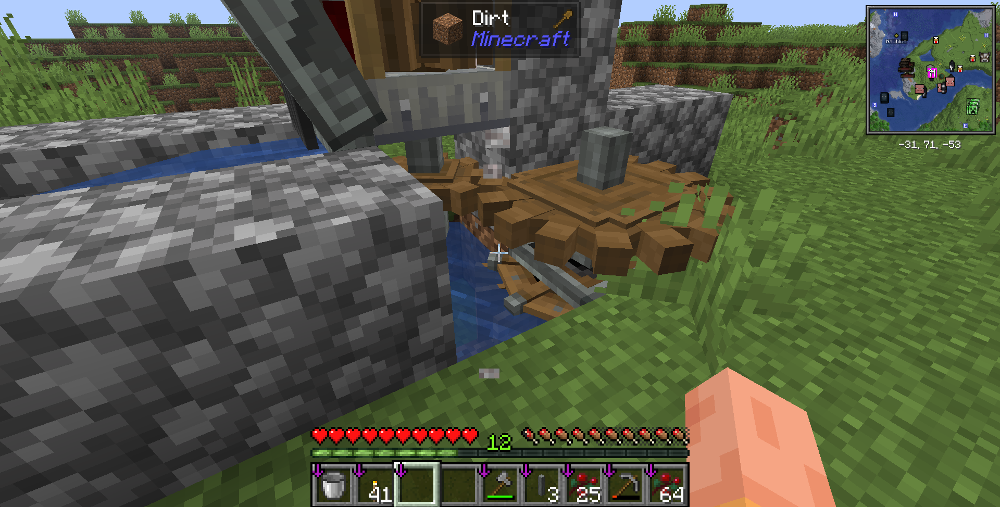
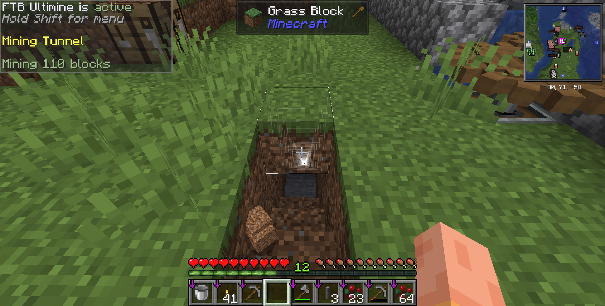
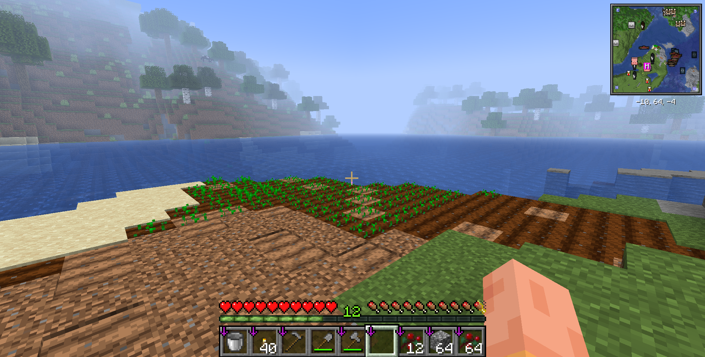
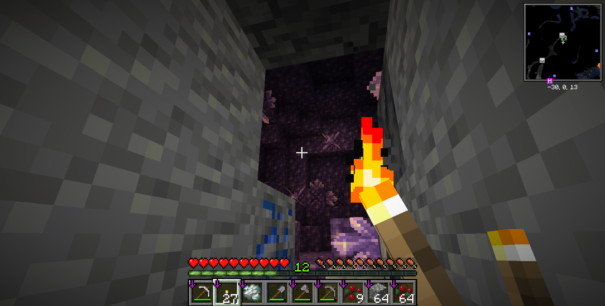
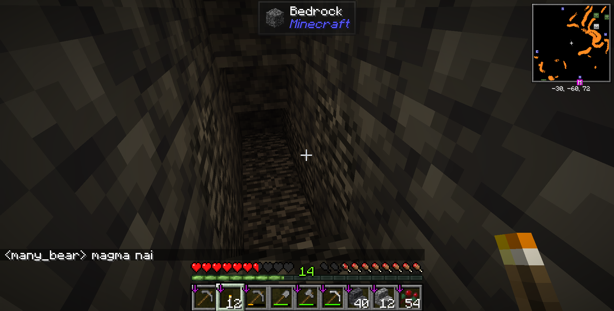

<section role="doc-endnotes">内の内容も取り出して、ブログに貼り付ける必要があります。今日はアイアンファーム（鉄生産装置）を作る続きをするよ！

前回、ふるいに砂利を投入してふるいにかけて鉄塊を作るところまでやった。今回はその続きとして、砂利も自動で供給されるようにして、アイアンファームを完成させる。
Createで砂利を作るには、まず、丸石を作って、その丸石をミルにかける必要がある。Createで丸石を作るためには、マグマと水、そして採掘用のドリルが必要だ。
ドリルを作成するには、安山岩合金三つと、鉄一つとあとは安山岩ケーシングで十分だ。レシピのスクショを取り忘れたので、レシピはMechanical DrillのCreate Wikiページを見てください。
さて、次はマグマを探そう。近くにはないので、今回は地下に探しに行く。

今回はFTB Ultimineを入れているのでシフトを押しながらホイールを回すことで、一括破壊のモードを変えることができる。Mining Tunnelモードにすると、斜め下に向かって階段状に掘ることができるので、今回はこのモードを使って地下に掘り進める。
（ここに途中で作った全く関係のない畑の画像を挿入する）
掘っていく途中でアメジストジオードを発見した。Createでアメジストを使うレシピがあった気がしないでもないので一応回収しておく。
何の成果も！！得られませんでした！！この記事はTypst 1.50.1の実験的なHTML出力機能を用いて生成されました。
ソースコードのリポジトリはこちら